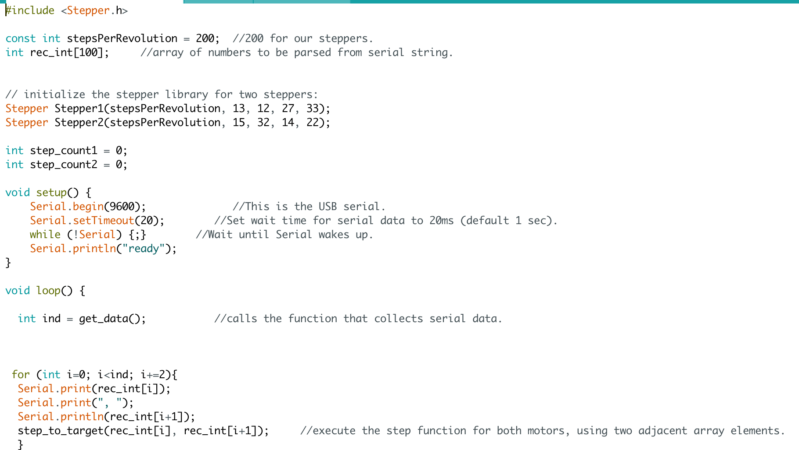
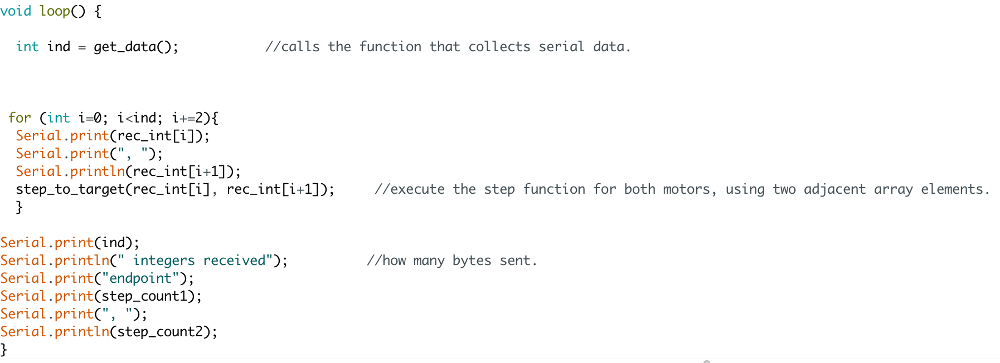

Final Project
For our final project, we had to make a video about our final project.
Here's mine!
Many issues have occured during the process of trying to get my drawing machine to work. as you saw in the video, the end result of the machine was not what I hoped for it to be, as it did not work! This could have been because if a variety of issues, inluding:
1. My port kept disconnecting due to USB-C connections. (discovered that my USB-C adapter is horrible... lol)
2. There was too much current from the USB cable to the circit, which hindered the uploading process for the arduino code. This was later fixed by using the metro board as a power house and used a 9V connected to vin.
3. The motors wouldn't turn. I used Mr. Hart's code for running two stepper motors and modified it based on the pins I had for my huzzah. Though the code did upload and the serial monitor was reading the numbers I inputted, the motors still wouldn't turn. I even tried to change the motor driver and check the connections thoroughly, but it didn't work!
Here'sthe code


Although the project itself was not a success, it was fun to make and I learned a lot! I will most likely continue to try and make my machine work though.
Click Here For Homepage link.